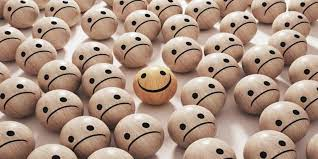

COMO VIVIR BIEN Y ALCANZAR LA FELICIDAD
Todos queremos ser más felices. Pero ¿Es posible ser más feliz? Es habitual que la mayoría de personas tengamos una lista mental de cosas que creemos que necesitamos para ser felices. Hay muchos aspectos externos que nuestra sociedad nos enseña a perseguir: éxito, riqueza, fama, poder, amor, etc. Pero ¿Son realmente las claves de la felicidad?
“El hombre que hace que todo lo que lleve a la felicidad dependa de él mismo, ya no de los demás, ha adoptado el mejor plan para vivir feliz”. Platón (427 a.C. - 347 a. C.) Se necesita mucho para ser feliz; sin embargo, llevamos bastante tiempo creyendo lo contrario. Decía Charles Dickens, un escritor inglés, que el truco está en no buscar la felicidad, en verla como ese regalo que desenvolvemos de vez en cuando. Ahora bien, asumir este tipo de enfoques idealistas nos aleja de la auténtica realidad. Porque, al fin y al cabo, esta dimensión se relaciona de manera directa con la salud mental. Es más, cuando nos señalan aquello de que la felicidad está en las pequeñas cosas del día a día resultará imposible verlas o apreciarlas si no estamos bien. Si en nuestro interior hay sufrimiento, el rumor de la angustia, el torbellino de la ansiedad o el peso de algún trauma. No importa que la vida nos dé motivos para estar felices; si en nuestro interior hay caos, lo que pase fuera carece de sentido.
De acuerdo con John Locke “Los hombres siempre olvidan que la felicidad es una disposición de la mente, no una condición dada por las circunstancias”. Es posible ser feliz en cualquier momento y lugar. El ingrediente secreto es nuestra actitud junto a la visión en perspectiva.
Feliz no es siempre el que más pertenencias tiene. Tampoco el que más amigos dispone. El auténtico bienestar se construye en el día a día a través de las siguientes dimensiones que son el cuidado de la autoestima, ya que necesitamos tomar consciencia de que es lo que nos hace daño, también trabajando por aquello que queremos y merecemos. Debemos tener en cuenta que hay que darle un significado a nuestra ida, hallar un sentido a lo que somos y a lo que vemos.
Hay que dominar el difícil arte de estar bien con uno mismo. Hay que saber quererse, ser capaz de luchar por lo que se quiere, aceptar los días malos cuando vienen, aprender de ellos y permitirnos disfrutar de los momentos buenos cuando llegan. Aunque esto no quita que estamos obligados a vivir circunstancias complejas, instantes en que las crisis y los problemas se abren bajo nosotros. Somos conscientes de que en ocasiones la felicidad parece más bien n ideal que una realidad. Sin embargo, esa dimensión tan reconfortante forma parte misma de la vida.
Ser feliz significa auto realizarse, alcanzar las metas propias de un ser humano. Aristóteles, discípulo de Platón, sostenía que todos los hombres perseguían la felicidad. Unos son felices ganando dinero; otros, recibiendo honores, y otros viajando. Cada cual posee el secreto de su propia felicidad. Pero para eso hay que conocerse bien a uno mismo, claro está, y saber qué se quiere.
Para ser felices y vivir bien, se necesitan muchas más cosas de las que pensamos. Hay que estar bien con uno mismo, quererse, ser capaz de luchar por lo que se quiere, aceptar los días malos cuando vienen, caer y saber levantarse una y diez veces.
AUTORA: KAROL DAYANA FLOREZ.
COMO VIVIR MEJOR Y ALCANZAR LA FELICIDAD
En la filosofía podemos encontrar diversas posiciones sobre la felicidad, para algunos puede ser el desprendimiento de lo material en la tierra, pero para otros puede ser disfrutar de los placeres de la vida como tener una buena solvencia económica, disfrutar de esta, y también ser participe en la sociedad consumista en la cual diversifican la razón con la lógica, es decir disminuyen su valor que era tenido en cuenta hasta que comenzó la postmodernidad en la cual se dio el comienzo a el mercantilismo a gran escala, no infiero que este sea malo, infiero que este alude a acciones que van en contra de la razón, como lo es lo dionisiaco.
Teniendo en cuenta lo dicho anteriormente voy a presentar algunas frases las cuales hablan sobre la felicidad: - “No hay un camino a la felicidad: la felicidad es el camino” Buda Gautama, esta alusión nos habla de que cualquier acción por más pequeña que sea es la felicidad, es decir, al trazarnos una meta, al comenzar a realizar aquella meta, somos felices haciéndolo por más dificultad que esta requiera, es decir, en este caso sería felicidad subjetiva.
Otra frase reconocida es la del filósofo griego Sócrates el cual plantea: -“El secreto de la felicidad no se encuentra en la búsqueda de más, sino en el desarrollo de la capacidad para disfrutar menos”, esta frase nos explica de manera explicita que si no somos felices con lo que tenemos no seremos felices con lo que anhelamos o buscamos, esta frase puede ser vista de un punto de vista conformista, como también puede ser visto como un punto de vista para dar valor a todo lo que tenemos y disfrutar de esto sin añorar más de lo requerido.
También existe un planteamiento del filósofo Platón el cual nos habla del autoconocimiento del ser, es decir: -“El hombre que hace que todo lo que lleve a la felicidad dependa de él mismo, ya no de los demás ha adoptado el mejor plan para vivir feliz”, es decir, el hombre con alto grado de autonomía y autoconocimiento, no requiere de que su felicidad dependa de algún otra persona, es decir, el auto conocernos nos ayuda a restar importancia a opiniones contraproducentes de las demás personas, como decía Nike: -“Just do it”, es un claro ejemplo de que la validación de los demás no tiene importancia sino la del mismo ser.
Otro punto de vista subjetivo es el de la RAE, la Real Academia Española de la lengua nos infiere que la felicidad es un: -“Estado de grata satisfacción espiritual y física”, es decir, estar satisfechos con nosotros mismos, es decir con nuestra esencia que está relacionado con la autosatisfacción del ser en todos los ámbitos de la vida, el cómo actuamos, como nos sentimos, como tratamos a los demás sin importar su raza, su credo, su cultura, también la satisfacción por los pequeños logros personales y estar satisfechos de ello es la felicidad para la RAE.
Un punto de vista allegado a platón, maestro de Aristóteles es: - “La felicidad depende de nosotros mismos”, por lo tanto podemos dar inferencia de que esta frase nos explica de una manera racional de que la felicidad es subjetiva, cada persona tiene su criterio de felicidad, cualquier acción que nos haga felices es un motivo de felicidad, sin importar los demás.
Otro punto de vista clave es la felicidad para el filósofo Séneca, el cual nos habla de la felicidad subjetiva y la autosatisfacción del ser, la frase dice: - “Las grandes bendiciones de la humanidad están dentro de nosotros y a nuestro alcance. El sabio se contenta con su suerte, sea cual sea, sin desear lo que no tiene”, es decir, la felicidad está en la suerte que tengamos, sea cual sea la situación en la que estemos implicados, sin desear lo que no tenemos.
Algo apartado de el autoconomiento del ser es la obligación de ser felices, es decir, como decía Lao Tzu: - “Si estás deprimido, estás viviendo en el pasado. Si estás ansioso, estás viviendo en el futuro. Si estás en paz, estas viviendo en el presente”, en pocas palabras, - “El ayer es historia, el mañana es un misterio, pero el hoy es un obsequio, por eso se le llama presente, para que vivas, rías y cantes pero sobre todo que seas feliz”.
Para Kant la felicidad es un deber, por encima del deseo, es decir: - “La felicidad, más que un deseo , alegría o elección es un deber”
Para Nietzsche la felicidad es: -“Es el sentimiento de que el poder crece, de que una resistencia ha sido superada”, esta frase contradice todo lo anterior dicho, ¿por qué?, simplemente porqué nos habla del no conformismo del ser, sino la búsqueda de la superación de toda adversidad, es decir, no conformarnos con pasar esa adversidad y tratar de buscar la forma de ser felices en ella sino simple y sencillamente buscar solucionarla para así vivir felices.
Otro filosofo nos plantea el huir del dolor, como lo es John Stuart Mill que nos platea: - “He aprendido a buscar mi felicidad limitando mis deseos en vez de satisfacerlos”, es decir, en la sociedad mercantilista y consumista del siglo XXI nos plantea que debemos satisfacer todos nuestros deseos, consumiendo productos que son fabricados por grandes empresas, es decir, Stuart nos plantea todo lo contrario ya que nos dice que al limitar los deseos podemos lograr alcanzar la felicidad.
En conclusión, la felicidad es un planteamiento objetivo en la filosofía, pero es subjetivo en cada ser ya que al tener razonamientos diferentes inferimos lo que mejor se adapte con nosotros, para finalizar esta frase: - “La felicidad es como una mariposa, cuanto más la persigues, más te eludirá, pero si vuelves tu atención a otras cosas, vendrá y suavemente se posará en tu hombro”. Henry David Thoreau.